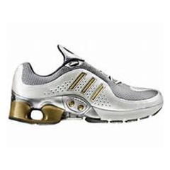

| 绿色纺织品 随着工业现代化和人民生活水平的提高,环境问题已越来越受到人们的重视。纺织行业特别是印染业的污染问题更引起全社会的关注。 |
查看详情 >> | |
触摸屏手套 |
查看详情 >> | |
Apple Watch Apple Watch 是苹果公司于2014年9月公布的一款智能手表，有Apple Watch、Apple Watch Sport 和Apple Watch Edition 三种风格不同的系列。Apple Watch 采用人造蓝宝石水晶屏幕与Force Touch触摸技术，有多种颜色可供选择。 |
查看详情 >> | |
 |
Ghost S 可穿戴摄像机 |
查看详情 >> |
 |
智能手环 |
查看详情 >> |
变色龙智能衣 |
查看详情 >> | |
|  | 智能鞋 2015年1月，361°与百度合作推出四款智能童鞋产品，引入百度鹰眼技术，配合百度地图LBS平台开放服务，具备定位监测功能。 |
查看详情 >> |